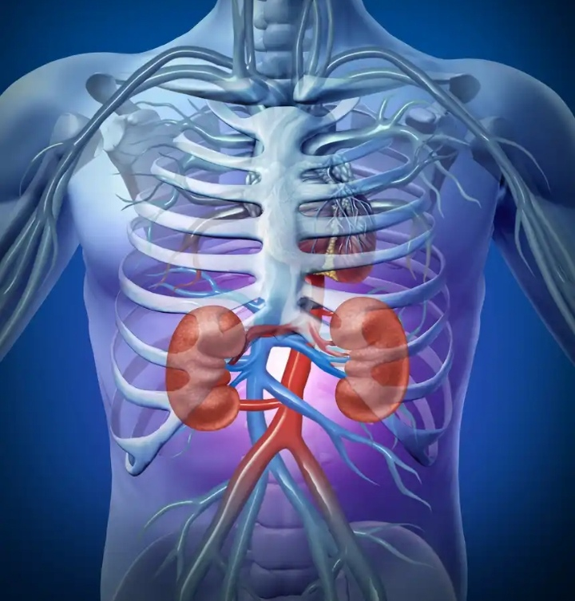

Kidney disease

See Dr sadiq mika'il for more information
Longstanding disease of the Kidney leading to renal failure.
The Kidney filter waste and excess fluid from the blood.As Kidney fail,waste build up